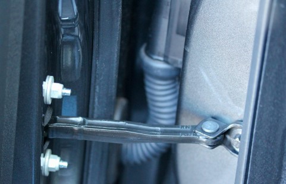

Fixing a Squeaking Door
Tools / Parts Needed
- WD-40 w/ Spray Nozzle
1. Open your Door
Open your door and identify the hinge that squeaking.
2. Applying WD-40
Began spray the door hinges with WD-40 being carefully not to spray the door panel.
3. Removing Squeak
Move your door back and fourth to allow the WD-40 to soak into the hinge and the squeak for clear up immedeately.